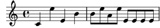
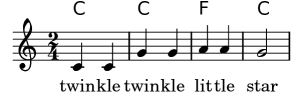
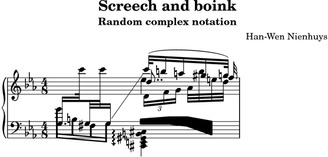

GNU LilyPond — 学習マニュアル
このドキュメントは
PDF 形式
と
複数のページにインデックス化された形式
でも利用可能です。
このファイルは GNU LilyPond のドキュメントです。
Copyright © 1999–2008 著作者一同
The translation of the following copyright notice is provided
for courtesy to non-English speakers, but only the notice in English
legally counts.
以下は英語を話さない人々のための著作権についての注意書きです。しかしながら、英語で書かれた注意書きだけが法的に有効です。
GNU フリー文書利用許諾契約書バージョン 1.1 またはフリー ソフトウェア財団によって発行
されたその後のバージョンの約定に従う限り、このドキュメントを複製、変更する許可を与えます。
変更不可部分はありません。この利用許諾契約書のコピーは 「GNU フリー文書利用許諾契約書」
という章に含まれています。
Permission is granted to copy, distribute and/or modify this document
under the terms of the GNU Free Documentation License, Version 1.1
or any later version published by the Free Software Foundation;
with no Invariant Sections.
A copy of the license is included in the section entitled “GNU
Free Documentation License”.
これは GNU LilyPond バージョン 2.12.3 のための学習マニュアルです。このドキュメントと他のドキュメントとの関係についての更なる情報は、このドキュメントについて を参照してください。
http://www.lilypond.org/ で更なる情報を見つけることができます。
このウェブ サイトにはこのドキュメントと他のドキュメントのオンライン コピーがあります。
序文
それは 1995 年のある日の EJE (Eindhoven Youth Orchestra) のリハーサル中のできごとでした − ある変わり者のバイオリン奏者であるジャンは同じく変わり者のフレンチホルン奏者のハン-ウェンに彼がかかわっている新しい大きなプロジェクトのことを話しました。それは音楽を出版するための自動化されたシステムです (正確には、それは MPP − MusiXTeX のプリプロセッサです)。それを聞いてハン-ウェンはすぐに楽譜からいくつかの部分をプリントアウトしたいと思い、彼はそのためのソフトウェアを探し始め、すぐにその虜になってしまいました。それが MPP の終わりを決定付けました。多くの哲学的考察を含み白熱した email の交換の後、ハン-ウェンは 1996 年に LilyPond の製作を開始しました。この時、ジャンはハン-ウェンの新しいプロジェクトに引きずり込まれました。
ある意味、コンピュータ プログラムを開発することは楽器の演奏方法を学ぶことに似ています。最初は、それ (プログラムや楽器) がどのように機能するか考えていくことが楽しみであり、できなかったことをできるようにするのは挑戦です。最初の興奮が去った後は、あなたは練習を積み重ねなければなりません。練習や勉強は退屈であり、他の人 − 先生、指揮者、聴衆 − からの動機付けを得なければあなたはすぐにあきらめてしまうことでしょう。継続して少しずつ演奏を重ねていくことはあなたの生活の一部となります。あるときは演奏することはごく自然で素晴らしいことに感じ、さらにあるときはうまくいきません。それでも、あなたは来る日も来る日も演奏を続けます。
音楽活動と同様に、LilyPond への取り組みも退屈なものになる可能性があり、あるときはバグの泥沼をこつこつと克服していくような感じになります。けれども、それは我々の生活の一部であり、我々はそれを続けます。おそらく最大の動機付けは、我々のプログラムが実際に人々のために何らかの形で役に立つということでしょう。我々がインターネットを閲覧していると、多くの人々が LilyPond を使用し、印象的な楽譜を出版していることがわかります。そういったものを見ることはまるで現実ではないようですが、とてもうれしいことです。
我々のユーザは我々のプログラムを使って我々を喜ばせてくれるだけではなく、彼らの多くは我々に提案をくれたり、バグの報告を送ってくれます。そのため、我々はすべてのユーザにバグ報告を送ってくれたり、提案をくれたり、その他の形で LilyPond に貢献してくれることを感謝したいです。
音楽を演奏することと楽譜をプリントすることは素晴らしい類似であるばかりではありません。一緒にプログラミングをすることは大いなる楽しみであり、人々の役に立つことは深い満足感を与えてくれます。しかし、究極的には LilyPond への取り組みは我々の音楽に対する深い愛情の表われなのです。あなたが多くの美しい音楽を作り出すのに LilyPond が役に立ちますように！
Han-Wen と Jan
2002年7月、オランダ ユトレヒト/アイントホーフェン
1. 導入部
この章では読者に LilyPond とこのドキュメントについての紹介を行います。
1.1 バックグラウンド
この節は LilyPond の最終目的とアーキテクチャについてカバーします。
譜刻
楽譜印刷の技術は (プレート) 譜刻 (原文: engraving、版画などの印刷のこと) と呼ばれています。この用語は伝統的な楽譜印刷のプロセスに由来します。ほんの数十年前まで、楽譜は音楽記号を亜鉛やしろめ (錫と鉛の合金) の版に反転したイメージで彫り込んだり、刻印することによって作られていました。版にはインクが塗られ、彫り込んだり刻印してくぼんだ部分にはインクが溜まります。版のイメージはその版に紙が押し付けられることによって形になります。刻印と彫刻は完全に手作業で行われていました。校正は可能だとしても厄介でした。なぜなら一から刻印と彫刻のやり直しだったからです。譜刻は高度に専門的な技術でした; 職人はマスター エングラーバ (譜刻を行う人) の称号を得るまで 5 年の修行を修めなければならず、本当に技術を習得するまでにはさらにもう 5 年の経験が必要だったのです。
今日では、コンピュータによってまったく新しい楽譜が出版されています。これには明らかな利点があります; 印刷は安く済み、編集したものを email で配ることが可能です。不幸なことに、コンピュータが広く使われるようになって楽譜のグラフィカルな品質は低下しています。コンピュータによって出版された楽譜は味気無く、機械的な見た目をしているため、その楽譜で演奏することに喜びを感じられません。
以下の図は伝統的な譜刻とコンピュータ出版の違いを描いたものであり、3 番目の図は LilyPond がどれくらい伝統的な見た目を模倣しているのかを示しています。左端のスキャンした図はコンピュータ出版の典型的な決定を示しています; 縦棒は細く、フラット記号の太さは細線と一致していて、曲線はまっすぐなレイアウトになっています。対照的に、ベーレンライター (Barenreiter: ドイツの出版社) のフラットは太く、曲線は官能的です。我々のフラットは 2 つのもののうち後者を元にデザインされています。丸みを帯びていて、太さは縦棒の太さと調和していて、コンピュータによるものよりも線が太くなっています。
|  |  |  |
| Henle (2000)
| Bärenreiter (1950)
| LilyPond Feta font (2003)
|
スペースの点では、スペースの配分は音符と音符の間の音の間隔を反映します。しかしながら、現代楽譜の多くは数学的な正確さを持った間隔に固執しています。このことはおもしろくない結果を生み出します。次の例では、2 度楽譜をプリントしています: 1 度目は正確に数学的なスペースを用いて、2 度目はそれに校正を加えています。違いを見分けられますか？

![[image of music]](1c/lily-f9b0aa77.png)
各小節には一定のリズムで演奏される音符だけがあります。スペースもそれを反映しています。不幸なことに、我々の目は我々を少し惑わせます。音符の「玉」 (ノート ヘッド) の間隔だけでなく、連続した棒 (ステム、音符から突き出る棒) の間隔も考慮します。結果として、アップ ステム/ダウン ステム (玉の上に突き出た棒/玉の下に突き出た棒) の組み合わせは離すべきであり、ダウン ステム/アップステムの組み合わせは近づけるべきです、すべては音符の垂直方向の位置の組み合わせに次第です。上の 2 小節は音符のダウン ステム/アップ ステムの組み合わせを近づけるよう校正を加えたものであり、下の 2 小節はこの校正を加えていないものです。
通常、奏者は楽譜の見え方を勉強するよりも演奏をするほうに夢中ですので、印刷上の詳細にこだわることは形式尊重のように思えるかもしれません。しかしそうではありません。単調なリズムがずっと続くような場合、スペースの校正を行うことで各行のレイアウトに微妙な変化が加わり、それぞれが異なる視覚的特徴を持つようになります。この特徴が無ければすべての行は同じに見え、迷路のようになってしまいます。奏者がちょっと目を逸らしたり、集中力を欠くと、それまで見ていた行はページの中に埋もれてしまいます。
同様に、太い譜線 (音の高さを表す線。五線譜では 5 本) に描かれた太い記号は見た目が強く、楽譜から奏者が離れている場合 – 例えば、楽譜が譜面台にある場合 – に良く目立ちます。空白を注意深く配置することで、楽譜は記号が乱雑になることなく締まります。結果としてページをめくる回数は最小となり、これは大きな利点になります。
これは印刷において共通して言えることですが、レイアウトはこざっぱりとしているべきです。これは印刷自体のためであるだけでなく、特にその印刷物を読んでいる読み手の助けにもなるからです。楽譜のような演奏用の道具では、このことは 2 重に重要性を持ちます: 奏者の注意力には限界があり、奏者が楽譜を読むことに払う注意力が少なくて済めば済むほど、その奏者は演奏に集中することができます。言い換えると、良い印刷は良い演奏につながるのです。
以上で挙げたことは、楽譜の印刷は微妙で複雑な技術であり、楽譜を印刷するには非常な熟練 – これは通常、奏者が持っているものではありません – が必要であるということを示しています。LilyPond は、手作業で譜刻された楽譜のすばらしさをコンピュータ世代に提供しよう、すばらしい楽譜を普通の音楽家にも利用可能にしようという我々の努力なのです。我々は、良く見てみたくなり、演奏したくなるような古い楽譜のクオリティに匹敵する楽譜を提供するために、アルゴリズム、フォント デザイン、プログラム設定を調整してきました。
自動譜刻
我々はどのように譜刻を実現していくのでしょうか？職人が本当のマスターになるのに 10 年以上かかるのなら、単なるハッカーである我々がどうやったら職人の仕事を越えるプログラムを書けるのでしょうか？
その答えは、我々には「できない」です。譜刻は人間的な状況判断に頼っているため、判断を行う人間を完全にコンピュータに置き換えることはできません。しかしながら、退屈な作業の多くを自動化することはできます。もし LilyPond が一般的なケースの大半に対処できるなら、それは既存のソフトウェアよりも大きく前進することになります。残りのケースは手作業で調整することができます。年数が経つにつれて、このソフトウェアはより多くのことを自動的に行えるよう洗練されていき、手作業による手直しはどんどん必要なくなっていくことでしょう。
我々が LilyPond の開発を始めたとき、我々は LilyPond プログラム全体を C++ プログラミング言語で書いていました。プログラムの機能は開発者によってかっちりと決められていました。これはいくつかの理由で不満足なものであることがわかりました:
- LilyPond が失敗を犯したとき、ユーザはフォーマット判断 (どのようなフォーマットにするかの判断) を上書きする必要があります。そのため、ユーザはフォーマット エンジンにアクセスしなければなりません。そのため、コンパイル時に我々 (開発者) によって規則と設定を固定することは無理があり、実行時 (LilyPond によって楽譜を作り出すとき) にユーザが規則と設定にアクセスできなければなりません。
- 譜刻は視覚的判断の問題であり、そのために好みがあります。我々には知識がありますが、ユーザは我々の個人的な判断に異を唱える可能性もあります。そのため、譜刻様式の定義もまたユーザがアクセスできるものでなければなりません。
- 最後に、我々は継続的にフォーマット アルゴリズムを改良させていくので、我々には規則に対する自由度の高いアプローチが必要です。C++ 言語は音楽表記の作業とはうまくマッチしない規則分類法を押し付けてきます。
これらの問題に対して、Scheme プログラミング言語のインタプリタを統合し、LilyPond の各部分を Scheme で書き直すという処置がとられてきました。現在のフォーマット アーキテクチャはグラフィカル オブジェクトという概念で構築されていて、Scheme 変数と関数によって記述されています。このアーキテクチャは、フォーマット規則、譜刻スタイル、個々のフォーマットに関する判断を包含しています。ユーザはこれらの制御の大半に直接アクセスする術を持ちます。
Scheme 変数はレイアウトに関する判断を制御します。例えば、多くのグラフィカル オブジェクトは上か下か (あるいは左か右か) の選択を決定する方向 (に関する) 変数を持ちます。ここで、アクセントとアルペジオを持つ 2 つの和音を見てみます。最初の和音では、すべてのグラフィカル オブジェクトは下向き (あるいは左向き) の方向を持っています。2 番目の和音では、すべてが上向き (あるいは右向き) の方向を持っています。
![[image of music]](ad/lily-a808e181.png)
楽譜を形作るプロセスはグラフィカルオブジェクトの変数を読み込んだり、書き込んだりすることからなります。いくつかの変数はプリセット値を持ちます。例えば、多くの線の太さ – 印刷スタイルの特性 – はプリセット値を持つ変数です。あなたは自由にこの値を変更することができ、それによってあなたの楽譜は異なる印象を持つことになります。
![[image of music]](45/lily-b8e84cc1.png)
さらにフォーマット規則もプリセット変数です: 各オブジェクトはプロシージャを保持している変数を持ちます。これらのプロシージャが実際のフォーマットを実行し、異なるプロシージャを使用することによってオブジェクトの見た目を変えることができます。以下の例では、音符の玉 (ノート ヘッド) シンボルを印刷するのにどの音符の玉オブジェクトを使用するかを決定する規則を楽譜の途中で変更しています。
![[image of music]](dd/lily-4ee665c7.png)
譜刻するシンボルは何か？
フォーマット プロセスはシンボルを置く場所を決定します。しかしながら、どのシンボルを譜刻すべきかを決定する – 言い換えると、使用する表記を決定する – と、シンボルを置く場所も決まります。
一般の音楽表記は音楽を記録するシステムであり、これは過去 1000 年以上にもわたって進化してきました。現在の一般的な形式はルネッサンス前期にまでさかのぼります。基本的な形式 (すなわち、音符の玉が 5 本線の譜表上にあるというもの) は変更されていませんが、細かな点は現代の表記の改革を表現するためにいまだに発展が続けられています。したがって、一般的な音楽表記はおよそ500年間の音楽を扱います。応用範囲は単旋律から大規模なオーケストラのための途方もない対位法にまで及びます。
どうやったら我々はそのような多頭の獣を統率し、制限のあるコンピュータ プログラムに押し込めることができるでしょうか？我々の解決策は表記の問題 (譜刻とは対照的にある、すなわち、活字学) を消化の良いプログラム可能な小さな塊に分解していくことです: それぞれのシンボルのタイプは個々のモジュール – いわゆるプラグイン – によって処理されます。各プラグインは完全にモジュール化されて独立していて、それによりそれぞれを別個に開発、改良することができます。そのようなプラグインは音楽的概念をグラフィック シンボルに変換する職人に例えて engraver (エングラーバ) と呼びます。
以下の例では、我々が音符の玉のためのプラグイン Note_heads_engraver から始めていく様子を見ていきます。
![[image of music]](38/lily-e26fb32e.png)
それから、Staff_symbol_engraver が譜表を加え
![[image of music]](2e/lily-09b3a4db.png)
Clef_engraver が譜表の参照位置を定義し
![[image of music]](ad/lily-b7b430b0.png)
Stem_engraver が棒 (ステム) を付け加えます。
![[image of music]](de/lily-dde85252.png)
Stem_engraver はやって来るすべての音符の玉 (ノート ヘッド) について知らされます。1 つの音符の玉 (あるいは和音の場合は複数の音符の玉) が現れるたびに、ステム オブジェクトが作成され、音符の玉に接続されます。さらにビーム (ステムとステムをつなぐ横棒)、スラー、アクセント、臨時記号、小節線 (小節と小節を区切る縦線)、拍子記号、調号のためのエングラーバを付け加えるによって、我々は完全な楽譜を手に入れることができます。
![[image of music]](48/lily-aa409614.png)
このシステムは単旋律の音楽に対してはうまく機能しますが、多声部音楽に対してはどうでしょうか？多声部表記では、多くの声部 (ボイス) が 1 つの譜表を共有します。
![[image of music]](81/lily-ac7b5eb7.png)
このような場合、臨時記号と譜表は共有されますが、ステム、スラー、ビームなどは各声部が単独で持ちます。そのため、エングラーバはグループ化されるべきです。音符の玉、ステム、スラーなどのためのエングラーバは ‘Voice context’ (ボイス コンテキスト) と呼ばれるグループに入れられ、一方の調子、臨時記号、小節線などのためのエングラーバは ‘Staff context’ (譜表コンテキスト) とグループに入れられます。多声部音楽の場合、単一の譜表コンテキストには複数のボイス コンテキストが含まれます。同様に、複数の譜表コンテキストは単一の楽譜 (Score) コンテキストになり得ます。楽譜コンテキストは最上位の表記コンテキストです。
参照
内部リファレンス:
Contexts.
![[image of music]](d5/lily-4da76545.png)
音楽表記
概念上、高レベル フォーマット システムのための入力フォーマットは内容を抽象的に記述するものになります。このケースでは、内容は音楽自体になります。これは手に負えない問題に見えます: どうやったら我々は音楽の本質を定義できるでしょうか？その答えを見つけようとする代わりに、我々はその問題を逆転させました。我々は楽譜を譜刻する能力を持つプログラムを書き、そのフォーマットができる限りすっきりしたものになるよう調整します。これ以上フォーマットを減らすことができないという状態になったとき、当然のことながら我々に残されているのは内容自体になります。我々のプログラムは音楽ドキュメントの形式定義として機能します。
さらに、構文が LilyPond のユーザ インタフェイスになっているため、
{
c'4 d'8
}
とタイプだけで、4 分音符の C1 (ミドル C (=ド)) と 8 分音符の D1 (ミドル C の上の D (=レ)) になります。
![[image of music]](a3/lily-4ac8db18.png)
|
Note: C = ド, D = レ, E = ミ, F = ファ, G = ソ, A = ラ, B = シ です。LilyPond では音符を「ドレミ〜」ではなく "CDE~" として捉えることが必須なので、今後は音符をアルファべット表記にします。
|
小さなスケールでは、そのような構文は簡単に使用できます。大きなスケールでは、構文はさらに構造を持つ必要があります。そうしなければ、どうやったらあなたはシンフォニーやオペラのような複雑な楽譜に取り組めるでしょうか？構造は音楽表現法というコンセプトによって形成されます: 小さな音楽の断片を組み合わせて大きな音楽にすることによって、より複雑な音楽を表すことができるようになります。例を挙げます。
f4
同時進行の音符はそれらを << と >> で囲むことによって構築できます:
<<c4 d4 e4>>
![[image of music]](ca/lily-8d9298b5.png)
この音楽表現を中括弧 { … } で囲むことによってシークエンスの中に入れることができます:
{ f4 <<c4 d4 e4>> }
![[image of music]](48/lily-f2a8b3f3.png)
上記もまた音楽表現の 1 つなので、<<, \\, and >> を使ってそれを再び他の同時進行の音楽表現 (2 分音符) と組み合わせることもできます:
<< g2 \\ { f4 <<c4 d4 e4>> } >>
![[image of music]](a0/lily-41ba6474.png)
このような再帰的な構造はさっぱりと、かつ、しっかりした形式でコンテキスト フリー文法で記すことができます。コード解析もまたこの文法から生成されます。言い換えると、LilyPond の構文ははっきりと明快に定義されます。
ユーザが LilyPond に取り組むときに、ユーザがその時間の大半で見て、扱うものはユーザ インタフェイスと構文です。それらのある部分は好みの問題であり、多くの議論の対象にもなるものです。好みについて議論することは有意義なことですが、それほど生産的なことではありません。LilyPond という大きな世界の中で、入力構文の重要性は小さいのです: さっぱりとした構文をでっちあげることは簡単ですが、見苦しくないフォーマット コードを作成することはとても難しいのです。このことは、それぞれのコンポーネントの行数をカウントすることによっても実証されます: 解析と表記のためのコンポーネントはソース コード全体の 10 % にも達しません。
例用例
我々はどのように譜刻の技術をコンピュータ プログラムの中に凝縮するかという実験として LilyPond を開発してきました。重労働のおかげで、今やこのプログラムは有用な働きを行うのに使用できるようになりました。非常に簡単な利用例は音符を刻譜することです。
![[image of music]](63/lily-bbccbca9.png)
コード ネームと歌詞を加えることによって、我々はリード譜を得ます。

さらに、多声部表記とピアノ譜を刻譜することもできます。以下の例はいくつかのより風変わりな構成を組み合わせています。

上で示した楽譜の断片はすべて手作業で作成されていました。しかしながら、必ずしも手作業で行う必要はありません。フォーマット エンジンの大部分は自動化されているため、その出力を音楽を操作する他のプログラムに供することができます。例えば、音楽の断片のデータベースをウェブサイトやマルチメディア プレゼンテーションで使用する画像に変換するために使用することもできます。
このマニュアルも利用例です: 入力フォーマットはテキストなので、容易に他のテキスト ベースのフォーマット – 例えば、@LaTex{}, HTML, このマニュアルの場合は Texinfo – に埋め込むことができます。ある特別なプログラムによって入力断片を音楽イメージに置き換えることができ、それによって PDF や HTML の出力ファイルという結果を得ることができます。これはドキュメントの中で音楽とテキストを混在させることを容易にします。
1.2 このドキュメントについて
この節では、このドキュメントの各部分について説明します。
学習マニュアルについて
本書は LilyPond の学習の始め方と、いくつかのキーとなるコンセプトをわかりやすい言葉で説明します。あなたは本書を一読すべきです。
各節の最後にある 参照 には、他の節への参照が含まれています: 初めて本書を読むときはこれらの参照を追うべきではありません。あなたが学習マニュアルをすべて読み終えたとき、いくつかの節を読み返し、さらに参照を追おうと思うかもしれません。
音楽用語集について
表記リファレンスについて
アプリケーション使用方法について
断片集について
内部リファレンスについて
その他のドキュメント
2. チュートリアル
2.1 最初のステップ
2.1.1 ファイルをコンパイルする
音楽表記を入力して出力を閲覧する
MacOS X
Windows
UNIX
2.1.2 簡単な表記
音高
演奏時間 (リズム)
休符
拍子記号
音部記号
すべてを一緒に
2.1.3 入力ファイルに取り組む
2.1.4 このマニュアルの読み方
クリック可能な例
2.2 単一譜表表記
2.2.1 臨時記号と調号
臨時記号
調号
警告: 調号と音高
2.2.2 タイとスラー
タイ
スラー
フレージング スラー
警告: スラー vs. タイ
2.2.3 アーティキュレーションと強弱記号
アーティキュレーション
運指法記号
強弱記号
2.2.4 テキストを追加する
2.2.5 自動ビームと手動ビーム
2.2.6 高度なリズム コマンド
部分小節
連符
グレース ノート
2.3 同時に演奏する複数の音符
2.3.1 音楽表記についての説明
数学的表記との類似
同時進行する音楽表記: 複数の譜
同時進行する音楽表記: 単一の譜表
2.3.2 複数の譜
2.3.3 譜表グループ
2.3.4 音符を組み合わせて和音にする
2.3.5 単一譜表での多声
2.4 歌曲
2.4.1 簡単な歌詞をセットする
2.4.2 歌詞を旋律に揃える
2.4.3 複数の譜への歌詞
2.5 仕上げ
2.5.1 変数を用いて楽曲を編成する
2.5.2 バージョン番号
2.5.3 タイトルを付け加える
2.5.4 絶対音符名
2.5.5 このチュートリアルの後にすべきこと
3. 基礎となるコンセプト
3.1 LilyPond 入力ファイルの仕組み
3.1.1 LilyPond ファイル構造の紹介
3.1.2 Score は (単一の) 複合的な音楽表記
3.1.3 音楽表記のネスト
3.1.4 ネストされない括弧とタイ
3.2 音楽を保持するボイス
3.2.1 私はボイスを聴いている
3.2.2 ボイスの明示的なインスタンス化
音符列
3.2.3 ボイスとボーカル
3.3 コンテキストとエングラーバ
3.3.1 コンテキストの説明
3.3.2 コンテキストを作成する
3.3.3 エングラーバの説明
3.3.4 コンテキスト プロパティを変更する
\with を用いてコンテキスト プロパティを設定する
\context を用いてコンテキスト プロパティを設定する
3.3.5 エングラーバを追加 / 削除する
単一のコンテキストを変更する
同じタイプのコンテキストをすべて変更する
3.4 テンプレートを拡張する
3.4.1 ソプラノとチェロ
3.4.2 4 パート SATB ボーカル譜
3.4.3 ゼロから楽譜を構築する
4. 出力を調整する
4.1 調整の基本
4.1.1 調整の紹介
4.1.2 オブジェクトとインタフェイス
4.1.3 オブジェクトとプロパティの命名規約
4.1.4 調整手段
4.2 内部リファレンス マニュアル
4.2.1 レイアウト オブジェクトのプロパティ
コンテキストを見つけ出す
1 回だけオーバライドする
元に戻す
4.2.2 インタフェイスの中で見つかるプロパティ
歌詞モードの中でコンテキストを指定する
4.2.3 プロパティのタイプ
4.3 オブジェクトの見た目
4.3.1 オブジェクトの可視性と色
ステンシル (stencil)
可視性の破棄 (break-visibility)
透過性 (transparent)
色 (color)
4.3.2 オブジェクトのサイズ
4.3.3 オブジェクトの長さと太さ
4.4 オブジェクトの配置
4.4.1 自動配置
4.4.2 譜表内部オブジェクト
運指法記号 (Fingering)
4.4.3 譜表外部オブジェクト
\textLengthOn
強弱記号
グラフィカル オブジェクトのサイズ
4.5 オブジェクトの衝突
4.5.1 オブジェクトを移動させる
4.5.2 表記の重なりを修正する
padding プロパティ
left-padding と right-padding
staff-padding プロパティ
self-alignment-X プロパティ
staff-position プロパティ
extra-offset プロパティ
positions プロパティ
force-hshift プロパティ
4.5.3 実際の音楽からの例
4.6 更なる調整
4.6.1 調整のその他の使用方法
異なるボイスの中にある音符をタイで結ぶ
MIDI でフェルマータをシミュレートする
4.6.2 調整のために変数を使用する
4.6.3 その他の情報源
4.6.4 処理に時間のかかる調整を避ける
4.6.5 Scheme を用いた高度な調整
5. LilyPond プロジェクトに取り組む
5.1 LilyPond 入力ファイルの記述に対する提案
5.1.1 一般的な提案
5.1.2 既存の音楽を譜刻する
5.1.3 大きなプロジェクト
5.1.4 変数と関数を用いて入力の手間を省く
5.1.5 スタイル シート
5.2 うまくいかないとき
5.2.1 古い入力ファイルをアップデートする
5.2.2 トラブルシューティング (すべてをバラバラにする)
5.2.3 最小化例
5.3 楽譜とパート
A. テンプレート
A.1 単一の譜表
A.1.1 音符のみ
A.1.2 音符と歌詞
A.1.3 音符とコード
A.1.4 音符、歌詞それにコード
A.2 ピアノ テンプレート
A.2.1 ソロ ピアノ
A.2.2 ピアノと歌詞を持つ旋律
A.2.3 中央に歌詞を持つピアノ譜
A.2.4 中央に強弱記号を持つピアノ譜
A.3 弦楽四重奏
A.3.1 弦楽四重奏
A.3.2 弦楽四重奏パート
A.4 合唱
A.4.1 SATB ボーカル譜
A.4.2 SATB ボーカル譜と自動ピアノ譜
A.4.3 整列されたコンテキストを持つ SATB
A.5 Ancient notation templates
A.5.1 Transcription of mensural music
A.5.2 Gregorian transcription template
A.6 Jazz combo
A.7 lilypond-book templates
A.7.1 LaTeX
A.7.2 Texinfo
A.7.3 xelatex
B. Scheme tutorial
B.1 Tweaking with Scheme
C. GNU Free Documentation License
Version 1.1, March 2000
| | Copyright © 2000 Free Software Foundation, Inc.
59 Temple Place, Suite 330, Boston, MA 02111-1307, USA
Everyone is permitted to copy and distribute verbatim copies
of this license document, but changing it is not allowed.
|
-
PREAMBLE
The purpose of this License is to make a manual, textbook, or other
written document free in the sense of freedom: to assure everyone
the effective freedom to copy and redistribute it, with or without
modifying it, either commercially or noncommercially. Secondarily,
this License preserves for the author and publisher a way to get
credit for their work, while not being considered responsible for
modifications made by others.
This License is a kind of ‘copyleft’, which means that derivative
works of the document must themselves be free in the same sense. It
complements the GNU General Public License, which is a copyleft
license designed for free software.
We have designed this License in order to use it for manuals for free
software, because free software needs free documentation: a free
program should come with manuals providing the same freedoms that the
software does. But this License is not limited to software manuals;
it can be used for any textual work, regardless of subject matter or
whether it is published as a printed book. We recommend this License
principally for works whose purpose is instruction or reference.
-
APPLICABILITY AND DEFINITIONS
This License applies to any manual or other work that contains a
notice placed by the copyright holder saying it can be distributed
under the terms of this License. The ‘Document’, below, refers to any
such manual or work. Any member of the public is a licensee, and is
addressed as ‘you’.
A ‘Modified Version’ of the Document means any work containing the
Document or a portion of it, either copied verbatim, or with
modifications and/or translated into another language.
A ‘Secondary Section’ is a named appendix or a front-matter section of
the Document that deals exclusively with the relationship of the
publishers or authors of the Document to the Document’s overall subject
(or to related matters) and contains nothing that could fall directly
within that overall subject. (For example, if the Document is in part a
textbook of mathematics, a Secondary Section may not explain any
mathematics.) The relationship could be a matter of historical
connection with the subject or with related matters, or of legal,
commercial, philosophical, ethical or political position regarding
them.
The ‘Invariant Sections’ are certain Secondary Sections whose titles
are designated, as being those of Invariant Sections, in the notice
that says that the Document is released under this License.
The ‘Cover Texts’ are certain short passages of text that are listed,
as Front-Cover Texts or Back-Cover Texts, in the notice that says that
the Document is released under this License.
A ‘Transparent’ copy of the Document means a machine-readable copy,
represented in a format whose specification is available to the
general public, whose contents can be viewed and edited directly and
straightforwardly with generic text editors or (for images composed of
pixels) generic paint programs or (for drawings) some widely available
drawing editor, and that is suitable for input to text formatters or
for automatic translation to a variety of formats suitable for input
to text formatters. A copy made in an otherwise Transparent file
format whose markup has been designed to thwart or discourage
subsequent modification by readers is not Transparent. A copy that is
not ‘Transparent’ is called ‘Opaque’.
Examples of suitable formats for Transparent copies include plain
ASCII without markup, Texinfo input format, LaTeX input format,
SGML or XML using a publicly available
DTD, and standard-conforming simple HTML designed
for human modification. Opaque formats include PostScript,
PDF, proprietary formats that can be read and edited only by
proprietary word processors, SGML or XML for which
the DTD and/or processing tools are not generally available,
and the machine-generated HTML produced by some word
processors for output purposes only.
The ‘Title Page’ means, for a printed book, the title page itself,
plus such following pages as are needed to hold, legibly, the material
this License requires to appear in the title page. For works in
formats which do not have any title page as such, ‘Title Page’ means
the text near the most prominent appearance of the work’s title,
preceding the beginning of the body of the text.
-
VERBATIM COPYING
You may copy and distribute the Document in any medium, either
commercially or noncommercially, provided that this License, the
copyright notices, and the license notice saying this License applies
to the Document are reproduced in all copies, and that you add no other
conditions whatsoever to those of this License. You may not use
technical measures to obstruct or control the reading or further
copying of the copies you make or distribute. However, you may accept
compensation in exchange for copies. If you distribute a large enough
number of copies you must also follow the conditions in section 3.
You may also lend copies, under the same conditions stated above, and
you may publicly display copies.
-
COPYING IN QUANTITY
If you publish printed copies of the Document numbering more than 100,
and the Document’s license notice requires Cover Texts, you must enclose
the copies in covers that carry, clearly and legibly, all these Cover
Texts: Front-Cover Texts on the front cover, and Back-Cover Texts on
the back cover. Both covers must also clearly and legibly identify
you as the publisher of these copies. The front cover must present
the full title with all words of the title equally prominent and
visible. You may add other material on the covers in addition.
Copying with changes limited to the covers, as long as they preserve
the title of the Document and satisfy these conditions, can be treated
as verbatim copying in other respects.
If the required texts for either cover are too voluminous to fit
legibly, you should put the first ones listed (as many as fit
reasonably) on the actual cover, and continue the rest onto adjacent
pages.
If you publish or distribute Opaque copies of the Document numbering
more than 100, you must either include a machine-readable Transparent
copy along with each Opaque copy, or state in or with each Opaque copy
a publicly-accessible computer-network location containing a complete
Transparent copy of the Document, free of added material, which the
general network-using public has access to download anonymously at no
charge using public-standard network protocols. If you use the latter
option, you must take reasonably prudent steps, when you begin
distribution of Opaque copies in quantity, to ensure that this
Transparent copy will remain thus accessible at the stated location
until at least one year after the last time you distribute an Opaque
copy (directly or through your agents or retailers) of that edition to
the public.
It is requested, but not required, that you contact the authors of the
Document well before redistributing any large number of copies, to give
them a chance to provide you with an updated version of the Document.
-
MODIFICATIONS
You may copy and distribute a Modified Version of the Document under
the conditions of sections 2 and 3 above, provided that you release
the Modified Version under precisely this License, with the Modified
Version filling the role of the Document, thus licensing distribution
and modification of the Modified Version to whoever possesses a copy
of it. In addition, you must do these things in the Modified Version:
-
Use in the Title Page (and on the covers, if any) a title distinct
from that of the Document, and from those of previous versions
(which should, if there were any, be listed in the History section
of the Document). You may use the same title as a previous version
if the original publisher of that version gives permission.
-
List on the Title Page, as authors, one or more persons or entities
responsible for authorship of the modifications in the Modified
Version, together with at least five of the principal authors of the
Document (all of its principal authors, if it has less than five).
-
State on the Title page the name of the publisher of the
Modified Version, as the publisher.
-
Preserve all the copyright notices of the Document.
-
Add an appropriate copyright notice for your modifications
adjacent to the other copyright notices.
-
Include, immediately after the copyright notices, a license notice
giving the public permission to use the Modified Version under the
terms of this License, in the form shown in the Addendum below.
-
Preserve in that license notice the full lists of Invariant Sections
and required Cover Texts given in the Document’s license notice.
-
Include an unaltered copy of this License.
-
Preserve the section entitled ‘History’, and its title, and add to
it an item stating at least the title, year, new authors, and
publisher of the Modified Version as given on the Title Page. If
there is no section entitled ‘History’ in the Document, create one
stating the title, year, authors, and publisher of the Document as
given on its Title Page, then add an item describing the Modified
Version as stated in the previous sentence.
-
Preserve the network location, if any, given in the Document for
public access to a Transparent copy of the Document, and likewise
the network locations given in the Document for previous versions
it was based on. These may be placed in the ‘History’ section.
You may omit a network location for a work that was published at
least four years before the Document itself, or if the original
publisher of the version it refers to gives permission.
-
In any section entitled ‘Acknowledgments’ or ‘Dedications’,
preserve the section’s title, and preserve in the section all the
substance and tone of each of the contributor acknowledgments
and/or dedications given therein.
-
Preserve all the Invariant Sections of the Document,
unaltered in their text and in their titles. Section numbers
or the equivalent are not considered part of the section titles.
-
Delete any section entitled ‘Endorsements’. Such a section
may not be included in the Modified Version.
-
Do not retitle any existing section as ‘Endorsements’
or to conflict in title with any Invariant Section.
If the Modified Version includes new front-matter sections or
appendices that qualify as Secondary Sections and contain no material
copied from the Document, you may at your option designate some or all
of these sections as invariant. To do this, add their titles to the
list of Invariant Sections in the Modified Version’s license notice.
These titles must be distinct from any other section titles.
You may add a section entitled ‘Endorsements’, provided it contains
nothing but endorsements of your Modified Version by various
parties—for example, statements of peer review or that the text has
been approved by an organization as the authoritative definition of a
standard.
You may add a passage of up to five words as a Front-Cover Text, and a
passage of up to 25 words as a Back-Cover Text, to the end of the list
of Cover Texts in the Modified Version. Only one passage of
Front-Cover Text and one of Back-Cover Text may be added by (or
through arrangements made by) any one entity. If the Document already
includes a cover text for the same cover, previously added by you or
by arrangement made by the same entity you are acting on behalf of,
you may not add another; but you may replace the old one, on explicit
permission from the previous publisher that added the old one.
The author(s) and publisher(s) of the Document do not by this License
give permission to use their names for publicity for or to assert or
imply endorsement of any Modified Version.
-
COMBINING DOCUMENTS
You may combine the Document with other documents released under this
License, under the terms defined in section 4 above for modified
versions, provided that you include in the combination all of the
Invariant Sections of all of the original documents, unmodified, and
list them all as Invariant Sections of your combined work in its
license notice.
The combined work need only contain one copy of this License, and
multiple identical Invariant Sections may be replaced with a single
copy. If there are multiple Invariant Sections with the same name but
different contents, make the title of each such section unique by
adding at the end of it, in parentheses, the name of the original
author or publisher of that section if known, or else a unique number.
Make the same adjustment to the section titles in the list of
Invariant Sections in the license notice of the combined work.
In the combination, you must combine any sections entitled ‘History’
in the various original documents, forming one section entitled
‘History’; likewise combine any sections entitled ‘Acknowledgments’,
and any sections entitled ‘Dedications’. You must delete all sections
entitled ‘Endorsements.’
-
COLLECTIONS OF DOCUMENTS
You may make a collection consisting of the Document and other documents
released under this License, and replace the individual copies of this
License in the various documents with a single copy that is included in
the collection, provided that you follow the rules of this License for
verbatim copying of each of the documents in all other respects.
You may extract a single document from such a collection, and distribute
it individually under this License, provided you insert a copy of this
License into the extracted document, and follow this License in all
other respects regarding verbatim copying of that document.
-
AGGREGATION WITH INDEPENDENT WORKS
A compilation of the Document or its derivatives with other separate
and independent documents or works, in or on a volume of a storage or
distribution medium, does not as a whole count as a Modified Version
of the Document, provided no compilation copyright is claimed for the
compilation. Such a compilation is called an ‘aggregate’, and this
License does not apply to the other self-contained works thus compiled
with the Document, on account of their being thus compiled, if they
are not themselves derivative works of the Document.
If the Cover Text requirement of section 3 is applicable to these
copies of the Document, then if the Document is less than one quarter
of the entire aggregate, the Document’s Cover Texts may be placed on
covers that surround only the Document within the aggregate.
Otherwise they must appear on covers around the whole aggregate.
-
TRANSLATION
Translation is considered a kind of modification, so you may
distribute translations of the Document under the terms of section 4.
Replacing Invariant Sections with translations requires special
permission from their copyright holders, but you may include
translations of some or all Invariant Sections in addition to the
original versions of these Invariant Sections. You may include a
translation of this License provided that you also include the
original English version of this License. In case of a disagreement
between the translation and the original English version of this
License, the original English version will prevail.
-
TERMINATION
You may not copy, modify, sublicense, or distribute the Document except
as expressly provided for under this License. Any other attempt to
copy, modify, sublicense or distribute the Document is void, and will
automatically terminate your rights under this License. However,
parties who have received copies, or rights, from you under this
License will not have their licenses terminated so long as such
parties remain in full compliance.
-
FUTURE REVISIONS OF THIS LICENSE
The Free Software Foundation may publish new, revised versions
of the GNU Free Documentation License from time to time. Such new
versions will be similar in spirit to the present version, but may
differ in detail to address new problems or concerns. See
http://www.gnu.org/copyleft/.
Each version of the License is given a distinguishing version number.
If the Document specifies that a particular numbered version of this
License ‘or any later version’ applies to it, you have the option of
following the terms and conditions either of that specified version or
of any later version that has been published (not as a draft) by the
Free Software Foundation. If the Document does not specify a version
number of this License, you may choose any version ever published (not
as a draft) by the Free Software Foundation.
ADDENDUM: How to use this License for your documents
To use this License in a document you have written, include a copy of
the License in the document and put the following copyright and
license notices just after the title page:
| | Copyright (C) year your name.
Permission is granted to copy, distribute and/or modify this document
under the terms of the GNU Free Documentation License, Version 1.1
or any later version published by the Free Software Foundation;
with the Invariant Sections being list their titles, with the
Front-Cover Texts being list, and with the Back-Cover Texts being list.
A copy of the license is included in the section entitled ‘GNU
Free Documentation License’.
|
If you have no Invariant Sections, write ‘with no Invariant Sections’
instead of saying which ones are invariant. If you have no
Front-Cover Texts, write ‘no Front-Cover Texts’ instead of
‘Front-Cover Texts being list’; likewise for Back-Cover Texts.
If your document contains nontrivial examples of program code, we
recommend releasing these examples in parallel under your choice of
free software license, such as the GNU General Public License,
to permit their use in free software.
D. LilyPond インデックス
目次
このドキュメントについて
This document was generated by Graham Percival on 1 月 13, 2010 using texi2html 1.82.
ナビゲーション パネルの中にあるボタンには以下のような意味があります:
| ボタン |
Name |
行き先 |
1.2.3 からの行き先 |
| [] |
|
|
|
| [ << ] |
FastBack |
この章あるいは前の章の先頭 |
1 |
| [] |
|
|
|
| [トップ] |
トップ |
ドキュメントの表紙 (先頭) |
|
| [目次] |
目次 |
目次 |
|
| [インデックス] |
インデックス |
インデックス |
|
| [ ? ] |
情報 |
情報 (ヘルプ) |
|
| [] |
|
|
|
| [ >> ] |
FastForward |
次の章 |
2 |
| [] |
|
|
|
| [] |
|
|
|
| [ < ] |
Back |
前のセクション |
1.2.2 |
| [] |
|
|
|
| [ 上へ ] |
上 |
上のセクション |
1.2 |
| [] |
|
|
|
| [ > ] |
Forward |
次のセクション |
1.2.4 |
この表で、 行き先 は、現在の位置が以下のような構造を持つドキュメントの サブサブセクション 1-2-3 であると仮定しています:
- 1. セクション 1
- 1.1 サブセクション 1-1
- 1.2 サブセクション 1-2
- 1.2.1 サブサブセクション 1-2-1
- 1.2.2 サブサブセクション 1-2-2
- 1.2.3 サブサブセクション 1-2-3
<== 現在の位置
- 1.2.4 サブサブセクション 1-2-4
- 1.3 サブセクション 1-3
- 1.4 サブセクション 1-4
他の言語: English, français, español, deutsch